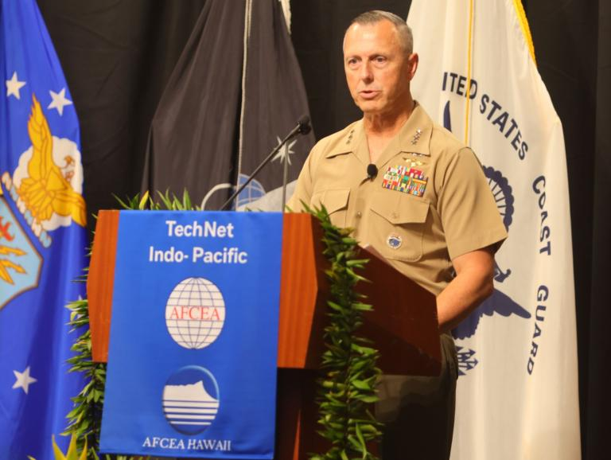

罗威尔中将在2026年印太技术网会议发表闭幕演讲（美国武装部队通信与电子协会网页面配图，Artistic Mindz Photography摄）
美印太司令部副司令罗威尔中将在2026年印太技术网会议闭幕演讲中披露，零信任与超级智能使能的"印太任务网络"已在多场演习中启用，首次实现与盟友以通用工具和数据流协同，支撑传感器到射手的跨距信息传递。他系统阐述了可靠指挥控制（C2）在威慑中的核心地位，强调指控体系必须在降级实战条件下保持运行，并提出通过任务式指挥与产业协同破解现代化的制度性瓶颈。这是观察美军联合全域指控从架构设计走向盟友实战协同的一条重要线索。
美国武装部队通信与电子协会网2026年10月29日报道，罗威尔在夏威夷檀香山的演讲中表示，威慑是印太司令部最高职责，其目标是让潜在对手认识到军事侵略不可行、升级冲突的代价远超收益，而可靠C2正是支撑这一威慑态势的神经系统。他提出，指控体系必须从一开始构建安全、韧性、互操作、可防御的架构，并确保在降级实战条件下保持功能——如果一套系统只在通信畅通、节点完好时才能工作，它在真实作战条件下就不可用。
罗威尔表示，以实力求和平正是这一逻辑的体现。他将当前战略环境概括为多重压力交织：中国军力建设、朝鲜核与潜艇项目、俄罗斯军事与工业能力持续发展，同时低成本自主系统加速扩散、精确打击武器不断演进，信息与决策优势日益成为对抗胜负的关键变量。在这一环境下，分散配置于简陋阵地的作战部队，必须依靠韧性指控系统把飞机、舰艇、地面部队、太空传感器与各级指挥所连接成整体，否则分散就等于被各个击破。
罗威尔介绍，印太司令部今年组织了17场联合演习，横跨9个东道国、纳入35个盟友与伙伴国，军种组成部队另执行70余场双边多边演习，保持在战区的持续存在。他把这些演习定义为对作战概念的严格压力测试，而非例行训练展示，使司令部能够在真实环境下检验跨域协同概念，而非停留于纸面推演。
其中，"勇敢之盾26"演习首次向关岛部署高超声速系统，运用协同作战飞机，并完成B-2轰炸机与远程反舰导弹的整合运用；"肩并肩26"演习首次在菲律宾发射"战斧"对陆攻击导弹，并促成伙伴国击沉靶船。这些课目共同指向一个能力方向：在广域分散的战场空间内，把传感器、指挥节点与火力单元按链路组织起来，形成跨域、跨国的协同打击能力。
罗威尔披露，"印太任务网络"作为零信任与超级智能使能的任务伙伴环境，已在多场演习中投入使用，盟友与伙伴首次以通用工具和数据流实现协同，传感器到射手的目标信息得以跨远距离传递。罗威尔称，该网络已在本年度多场重大演习中实际使用，其成功之处在于能够跨越距离的制约传递传感器到射手的目标信息与数据。这一进展的意义在于，它把联盟指控从"各自系统互联"推进到"共用一套任务环境"：各方不再依赖点对点接口转换，而是在同一零信任框架内共享数据流与作战工具。
从联盟联合全域指挥控制（CJADC2）的演进看，任务伙伴环境一直是美军与盟友数据共享的技术难点，涉及密级、信任与数据主权等复杂约束。印太任务网络在演习中的实际启用，标志着这一难点开始从概念验证转入运用验证阶段。
罗威尔同时指出，先进技术若受制于官僚流程便无法形成优势，现代化建设必须正视制度性障碍。他强调，可靠C2需要培育任务式指挥，训练指挥员与操作员具备信任、授权与主动性，在通信降级乃至完全中断时仍能依据指挥官意图自主行动——这意味着指控韧性不仅是技术属性，也是组织与人员属性。
在产业协同方面，他呼吁业界参与交付韧性强、可互操作的能力，把盟友伙伴更深地纳入C2架构。后续观察的重点，是印太任务网络向更多盟友与更多演习场景的扩展速度，以及任务式指挥训练与这套技术体系的融合程度。这两个维度将共同决定联盟协同指控从"演示可用"走向"战时可靠"的实际进程。